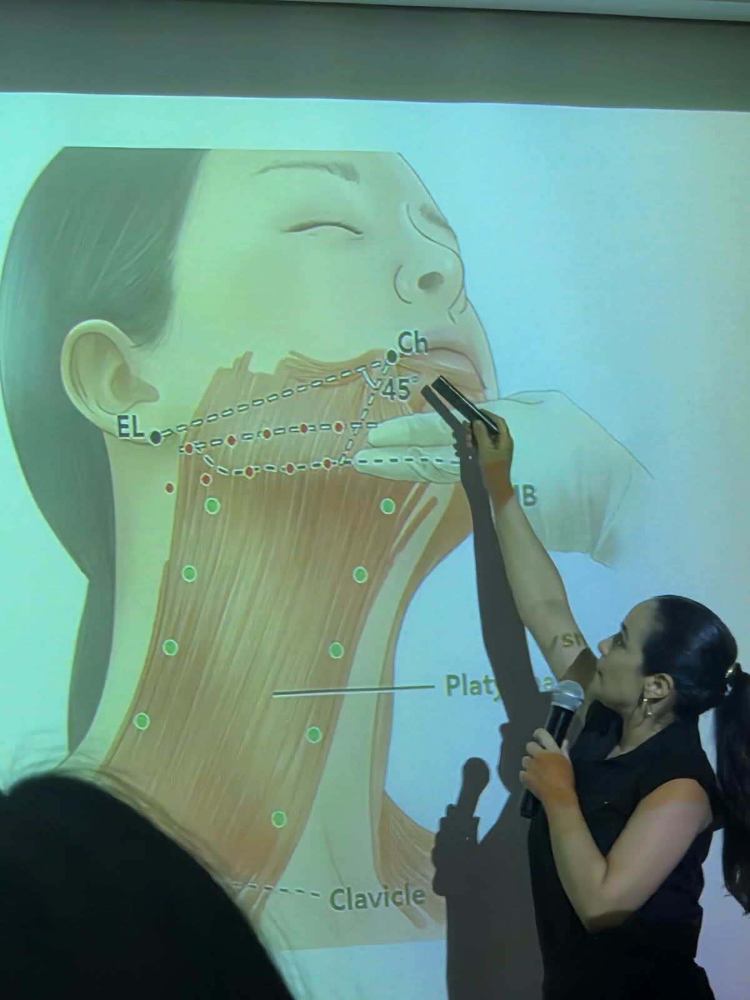
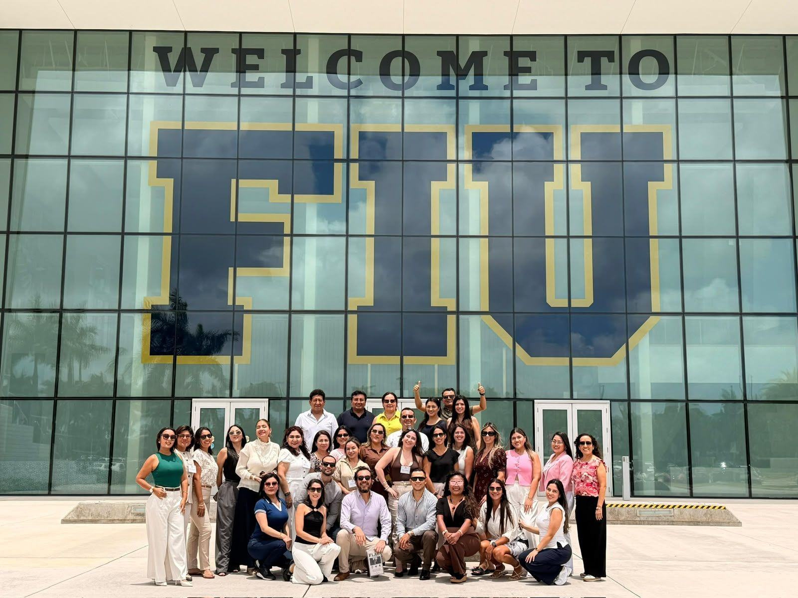
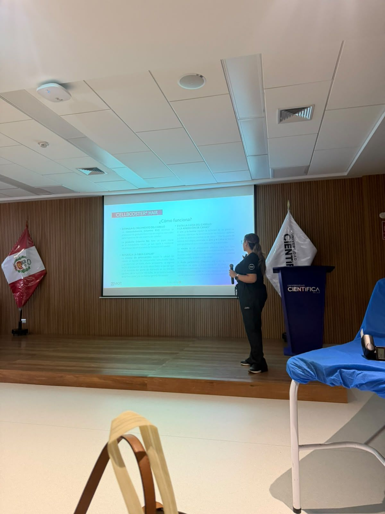
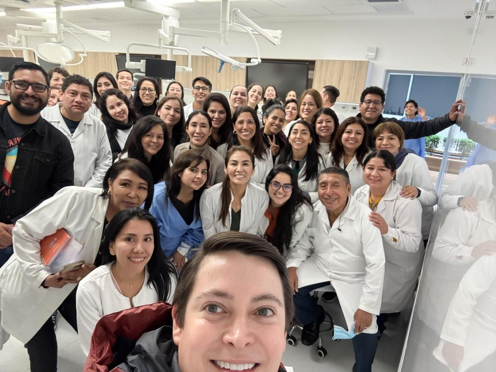
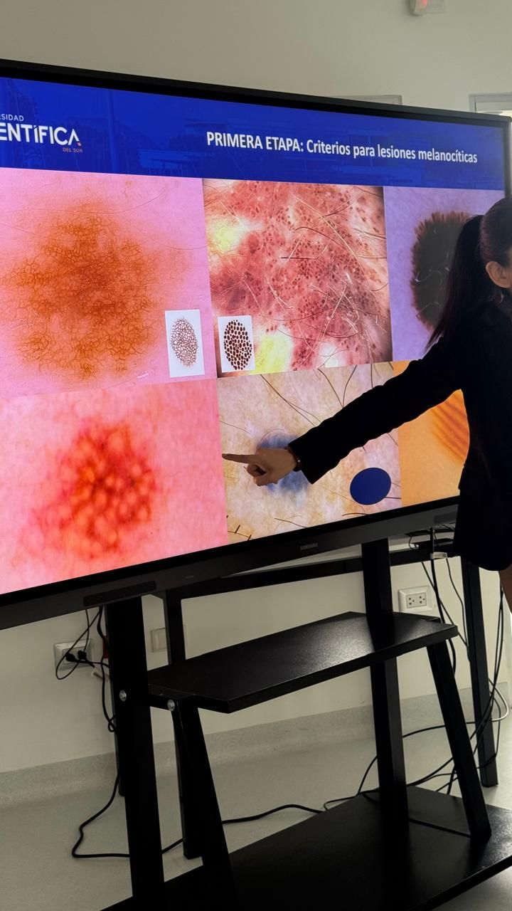
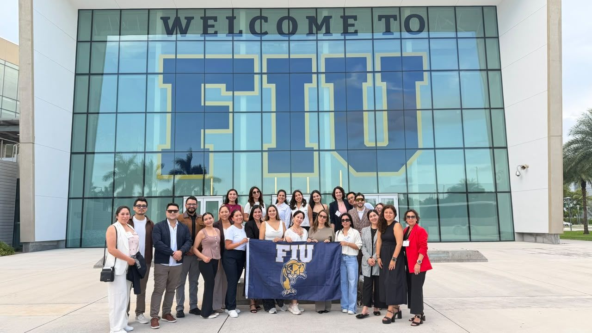
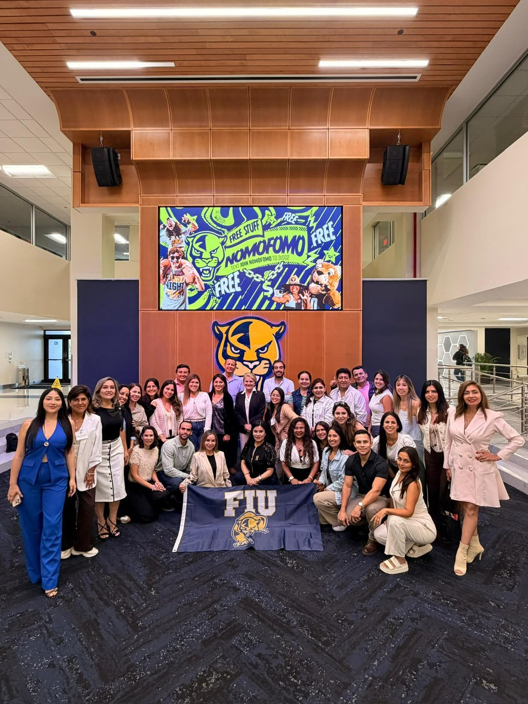
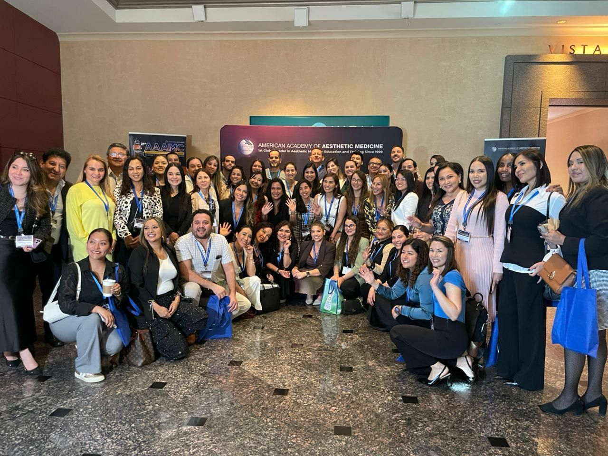
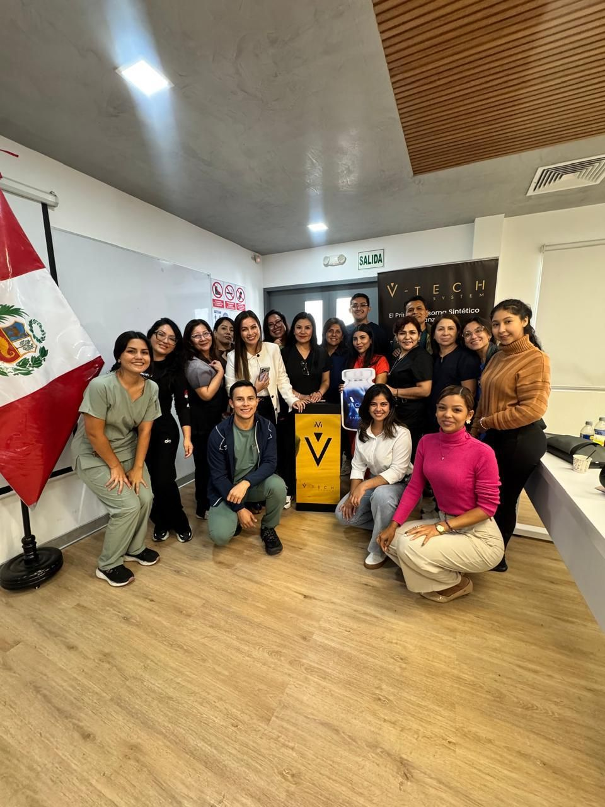
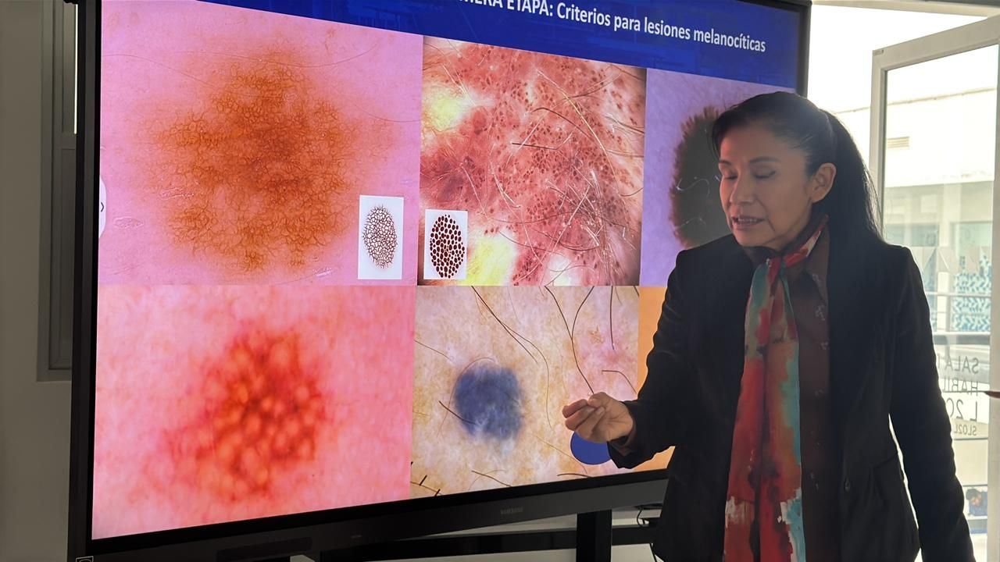

Lima, Perú. Asociación civil sin fines de lucro
Asociación de Magister en Medicina Estética del Perú
Reunimos a los médicos que cursan o culminaron la maestría en medicina estética, la mayoría en la Universidad Científica del Sur, para estudiar, enseñar y ejercer la disciplina con evidencia científica y con ética.


AMMEP
Ciencia, docencia y ética
Lo que hace la asociación por sus miembros y por los pacientes.
Formación continua
Cursos, talleres y jornadas para que los asociados actualicen técnicas y criterios clínicos, con ponentes del Perú y del extranjero.
Investigación
Promovemos estudios, revisiones y consensos que respalden lo que se hace en la consulta.
Práctica ética
Una medicina estética segura, con consentimiento informado y dentro de las normas del Colegio Médico del Perú.
Comunidad
Magísteres y maestrandos que comparten casos, dudas y oportunidades académicas. Muchos se conocieron en las aulas de la maestría.
Dónde nos formamos
Aulas, laboratorio y viajes académicos. Cada foto es un lugar del recorrido.








Ponencia invitada
El Dr. Nabil Fakih expuso ante los asociados en el auditorio de la Universidad Científica del Sur.
Demostración práctica
El Dr. Ballesteros muestra la técnica paso a paso frente al grupo. El rostro del paciente aparece desenfocado.
Dermatoscopía
Ponencia sobre criterios para lesiones melanocíticas, con láminas de dermatoscopía.
Próximas actividades
Por anunciar
La asociación publicará aquí sus próximos cursos, talleres y jornadas, con fecha, modalidad e inscripción.
¿Tiene formación de maestría en medicina estética?
Revise los requisitos, las categorías y los beneficios, y escríbanos para iniciar su inscripción.